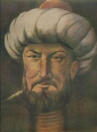

Hülâgû (?-1265)

Ýlhanlý Devleti'nin kurucusu ve ilk hükümdarýdýr. Cengiz'in torunudur. O da dedesi Cengiz gibi zalim bir hükümdar olarak tarihte yerini almýþtýr. Abbasi Devleti'ni yýktýðý gibi medeniyetini de yerle bir etmiþtir. Risâle-i Nur'da genellikle dedesi ile birlikte isimleri anýlmakta ve "ulûm-u Ýslâmiyeyi mahvetmek niyetiyle kütüphaneleri Dicle ve Fýrat nehrine atan Hülâgû...", "Cengiz ve Hülâgû fitnesi..." gibi ifadeler kullanýlmaktadýr.Hülâgû'nun ilk yýllarý ile ilgili bilgiler son derece az olup doðum tarihi de kesin olarak bilinmemektedir. Ýsmi daha çok dedesinin konu edildiði kayýtlarda geçmekte ve buradaki kayýtlara göre bilgi sahibi olunmaktadýr. Babasý Toluy Han, annesi Sorgaktani Hatun'dur. Hülâgû'nün babasý erken öldüðünden, eðitimi annesi tarafýndan Budist rahiplerine býrakýlmýþtýr. Bunlar ayný zamanda Cengiz'in yakýn arkadaþlarý idiler. Dokuz yaþýndan itibaren kayýtlarda dedesi ile birlikte görülen Hülâgû'nun, bu yaþlardan itibaren avlara katýlmaya baþladýðý görülmektedir.
Moðollar, hem merkezi otoritelerini güçlendirmek hem de batýdaki sýnýrlarýný geniþletmek maksadýyla Hülâgû'yu Yakýndoðu'ya gönderdiler. Moðollarýn baþýnda bulunan Mengü Han'ýn ölmesi ve deðiþen bazý þartlara paralel olarak, görevini tamamladýktan sonra merkezleri olan Karakurum'a dönmesi gereken Hülâgû, geri dönmeyerek nüfuzu altýnda bulunduðu topraklarda devletini kurdu. Kurulan Ýlhanlý Devleti'nin merkeze baðlýlýðý devam etti ve bu merkeze baðlýlýk durumu 1294 tarihine kadar sürdü.
Moðollarýn Karakurum'da toplanan kurultayýnda, Ýsmailîlerin ortadan kaldýrýlmasý, Abbasi Devletinin itaat altýna alýnmasý, Mýsýr ve Suriye'nin ele geçirilmesi görevleri Hülâgû'ya verildi. Daha önce Büyük Selçuklular için tehdit oluþturduðu halde zaptedilemeyen Ýsmailîlerin Alamut kalesi kýsa zamanda Moðollarýn eline geçti ve Ýsmailîler teslim alýndýktan sonra ortadan kaldýrýldýlar. Alamut kalesi ele geçirildikten sonra yerle bir edildiði gibi halký da kýlýçtan geçirildi.
Hülâgû, Alamut kalesini ele geçirdikten sonra Abbasilere yönelmeye baþladý. Halifeye gönderdiði mektupta Baðdat'ýn etrafýndaki surlarýn yýktýrýlmasýný, hendeklerin doldurulmasýný istedi. Ayrýca halifeye, idareyi oðluna devrederek bizzat huzuruna gelmesini söyledi. Ona göre, Tanrý, dünyanýn idaresini Cengiz ve onun soyundan gelenlere vermiþti. Halifeye karþý göstermiþ olduðu küstahlýðý belki de bu inancýndan kaynaklanýyordu.
Abbasi Halifesi Musta'sým (1242-1258), Hülâgû'nun isteklerini reddettiði gibi Baðdat'a karþý giriþeceði bir hareketin kendisi için felaket olacaðýný bildirdi. Bu cevap üzerine hemen harekete geçen Moðollar, üç koldan Baðdat üzerine harekete geçerek þehri kuþattýlar. Hülagû, halifeye, ailesini, yakýnlarýný, hazinesini yanýna alýp Basra'ya geçmesini ve Baðdat'ý teslim etmesini teklif ettiyse de bu teklifi de reddedildi. Baðdat'ý ele geçiren Moðollar halife ve üç oðlunu bir süre hapiste tuttuktan sonra iþkence ile öldürdüler. Dünya tarihinin en büyük tahribatýný yaptýlar (Doðuþtan Günümüze Büyük Ýslam Tarihi, Çað Yay. 3. C., Ýstanbul 1986, s. 328). Ýslâm dünyasýnýn ve ayný zamanda dünyanýn sayýlý medeniyet ve kültür merkezi olan Baðdat günlerce yaðma edildi. Tarihi þehir tahrip edildi ve halký da kýlýçtan geçirildi.
Hülâgû yönetimindeki Moðollar, dünya tarihinde eþine ender rastlanan büyük bir katliamý gerçekleþtirdiler. Katledilen insanlarýn sayýsý için nakledilen rakam sekiz yüz bin ile iki milyon üç yüz bin arasýnda deðiþmektedir (Abdülkadir Yuvalý; "Hülâgû", TDVÝA., 18. C., s. 474). Bu dehþet verici katliamdan sonra cesetlerden yayýlan kokular dünyanýn sayýlý canilerinden biri olan Hülâgû'ya bile dayanýlmaz hale gelince þehirden uzaklaþtý.
Hülâgû ve emri altýnda bulundurduðu Moðollarýn karakteri hakkýnda dikkat çekici bilgi veren eylemlerinden bir tanesi de kütüphaneleri tahrip ederek kitaplarý nehre atmalarýdýr. Müslümanlara ve Ýslâm medeniyetine olan düþmanlýklarýný bu yolla ifade ettiler. Ýslam ilim ve medeniyetini yok etmek için kitaplarý Dicle Nehrine attýlar (Sikke-i Tasdik-i Gaybi, s. 141). Atýlan kitaplardan dolayý nehir suyu günlerce mürekkep renginde aktý (Yuvalý, s. 474). Bu eylem ve hareket Ýslâm tarihi ve medeniyeti üzerinde büyük bir iz býraktý. Ýslam kültür ve medeniyeti bu tahribattan dolayý büyük zarar gördü ve duraklama dönemine girdi. Ýlim dünyasý büyük bir darbe aldý.
Hülâgû, Abbasi halifeliðini ortadan kaldýrdýktan sonra Urfa, Harran, Humus, Hama, Dýmaþk, Halep ve Antakya þehirlerini de ele geçirdi. Ele geçirdiði yerleri komutanýna býrakýp buralardan ayrýldýktan sonra Suriye ve bir kýsým yerler Memluklular aracýlýðýyla Moðol istilasýndan kurtarýldý. Moðol istilasý sonrasýnda ilginç bir ittifakýn oluþmaya baþladýðý görüldü. Bizans, Fransa Krallýðý, Küçük Ermeni Krallýðý, Haçlýlar ve Papalýk Hülâgû'nun yani Ýlhanlýlarýn yanýnda yer alýrken diðer tarafta da Memlük, Altýn Orda ittifaký oluþtu.
Hülâgû'nun istilasýndan ve tahribatýndan Anadolu da nasibi aldý. Anadolu daha önceden (1243 Kösedað Savaþý) Moðol hakimiyeti altýna girdiyse de 1258 yýlýndan itibaren ikiye bölündü. Hülâgû, Anadolu'yu ikiye bölerek her birinin baþýna bir Selçuklu þehzadesini atadý. Bu yolla hem onlarýn arasýnda güç ve iktidar mücadelesi baþlattý. Hem de Anadolu'dan aldýðý vergiyi bu yolla ikiye katladý. Bu tarihten sonra Anadolu'daki kargaþa daha da arttý.
Geniþ bir coðrafyada büyük bir tahribat ve katliam yapan Hülâgû, 1265 yýlýnda tahminen 48 yaþýnda öldü. Hazineleri için yaptýrmýþ bulunduðu Þahi adasýna gömüldü.
Ýslam dünyasý için bir dönüm noktasý teþkil eden Moðol istilasýna dair ayet ve hadislerde önemli iþaretler yer almaktadýr. Kur'an-ý Kerim'in 113. Suresi olan Felak suresini tevil ve tefsir eden Bediüzzaman, bu surede hem günümüze hem de Moðol istilasý ile Abbasilerin uðradýðý felaketlere iþaretlerin olduðunu beyan etmektedir. Bediüzzaman'a göre Felak Suresi'nde geçen "min þerri" kelimesi, Ýslamlarca en dehþetli olan "Cengiz ve Hülâgu fitnesinin ve Abbâsî Devletinin inkýraz zamanýnýn asrýna dört defa mânâ-yý iþârî ile ve makam-ý cifrî ile bakar ve parmak basar." (Þuâlar, s. 241)
Moðol felaketine temas eden hadisler de mevcuttur. Ayný zamanda Ýslam Aleminde birden fazla deccalin geleceðinin de iþareti sayýlan bir Hadis-i Þerif'te; "Uzun zaman hilâfet-i Abbâsiye devam edecek, sonra o saltanat Deccal eline geçecek" (Þuâlar, s. 348) denilmektedir. Böylece beþ yüz yýl devam eden Abbasi Halifeliðinin deccalin eline geçeceði bildirilmekte, ayný zamanda, Ýslam dünyasý için Hülâgû ve Moðollarýn oluþturduðu büyük tehlikeye açýk bir þekilde iþaret edilmektedir. Böylece yaptýðý büyük katliam ve tahribattan ötürü Hülâgû 'deccal' olarak tavsif edilmektedir.
Bir baþka Hadis-i Þerif'te; "Benim amcam, pederimin kardeþi Abbas'ýn veledinde hilâfet-i Ýslâmiye devam edecek. Tâ Deccala, o hilâfeti, yani saltanat-ý hilâfet, deccalýn muhrip eline geçecek" (Þuâlar, s. 434) denilmektedir. Bu hadis; Abbasi Devleti'nin kuruluþuna gaybi bir tarzda iþaret etmektedir. Bediüzzaman bunu, "uzun zaman, beþ yüz sene kadar hilâfet-i Abbasiye vücuda gelecek, devam edecek. Sonra Cengiz, Hülâgû denilen üç deccaldan birisi o saltanat-ý hilâfeti mahvedecek, deccalane Ýslâm içinde hükûmet sürecek. Demek Ýslâm içinde, müteaddit hadislerde, üç deccal geleceðine zâhir bir delildir" demek suretiyle yorumladýktan sonra Peygamber Efendimizin (asm) iki mucizesinin bu hadise ile gerçekleþtiðini belirtmektedir. Abbasi Devletinin kurulup beþ yüz sene sürmesi, zalim ve tahripkar Hülâgû eliyle son bulmasý (Þuâlar, s. 434).
Risâle-i Nur'da kütüphanelerin tahrip edilip kitaplarýn Dicle ve Fýrat nehirlerine atýlmasýna da temas edilmektedir. Hülâgû'dan, Ýslam ilimlerini mahvetmek gayesiyle kütüphaneleri Dicle ve Fýrat nehirlerine atan, Ýslam ilimlerine perde çeken þakî olarak söz edilmekte ve konu ile ilgili ayetlerin iþaretinden örnekler verilmektedir (Sikke-i Tasdik-i Gaybi, s. 141-95).